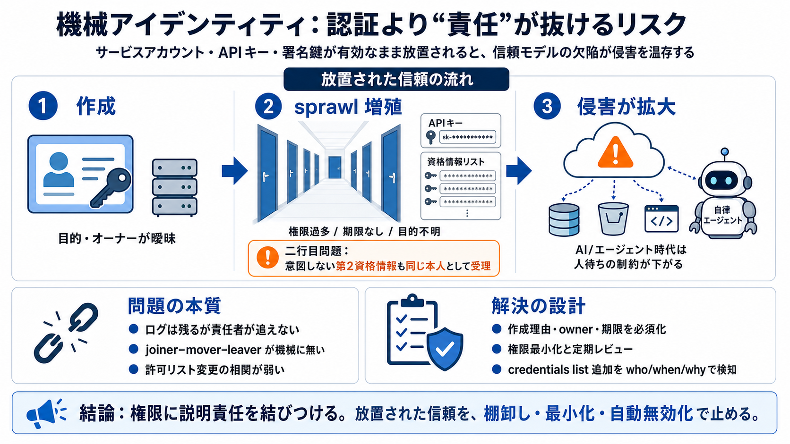

ガバメントクラウドがガバナンスの観点で重視する3要素｜デジタル庁
# ガバメントクラウドがガバナンスの観点で重視する3要素. デジタル庁%22%20d%3D%22M-100-100h300v300h-300z%22%2F%3E%3C%2Fsvg%3E). 2025年12月1日から5日に開催された「AWS …

# ガバメントクラウドがガバナンスの観点で重視する3要素. デジタル庁%22%20d%3D%22M-100-100h300v300h-300z%22%2F%3E%3C%2Fsvg%3E). 2025年12月1日から5日に開催された「AWS …
鍵管理の留意事項とガバメントクラウド *取り扱うデータの規制要件や利⽤組織の定めるポリシーに準拠することを想定 5.1 暗号鍵管理の留意事項とガバメントクラウド利⽤の前提 暗号鍵管理の要件への対応を進める際には、以下に挙げる留意事項と前提が…
Aaron が来日し、政 府関係者、有識者、企業代表と 会談 3 ・OECD が暗号政策ガイドライ ンを発表 ・電子情報安全法（Electronic Data security Act of 1997)が成立 ・ＴＩＳが鍵回復技術搭載の暗号…
## カテゴリーから探す. ## イベント・セミナーに参加する. # クラウドセキュリティ態勢とガバナンス強化【情報セキュリティガバナンス態勢強化に向けたアプローチ】—＜連載＞持続的な成長のためのリスクテイクに際して、企業はどうCyberと…
# 公共部門. ### 政府のセキュリティ近代化はアイデンティティから始めるべき. ## RSAなら、リスクを管理し、今日のサイバーセキュリティ要件を満たすことができます。. 政府機関、請負業者、システム・インテグレーターは、国家のサイバー…